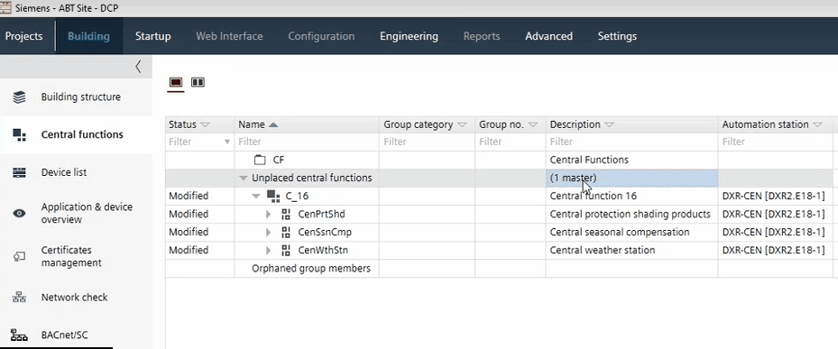

移动中心功能
您可以将中心功能从一个层次结构移动到另一个层次结构，或者从特殊文件夹（例如Unplaced central functions文件夹到中央功能层次结构中。特殊文件夹无法删除。但是，特殊文件夹仅在包含对象时才可见。

Move a central function
- Select a central function.
- Drag the central function to another hierarchy.

当您将中央功能从Unplaced central functions 文件夹到中央功能层次结构后，群组管理员会自动更新群组编号。